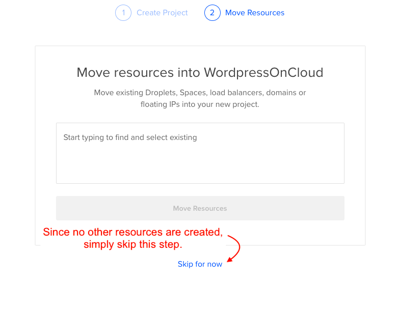
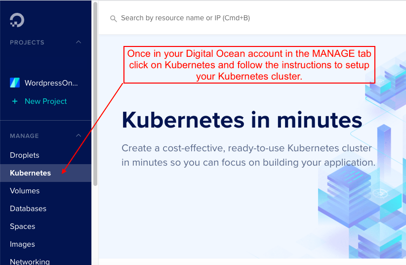
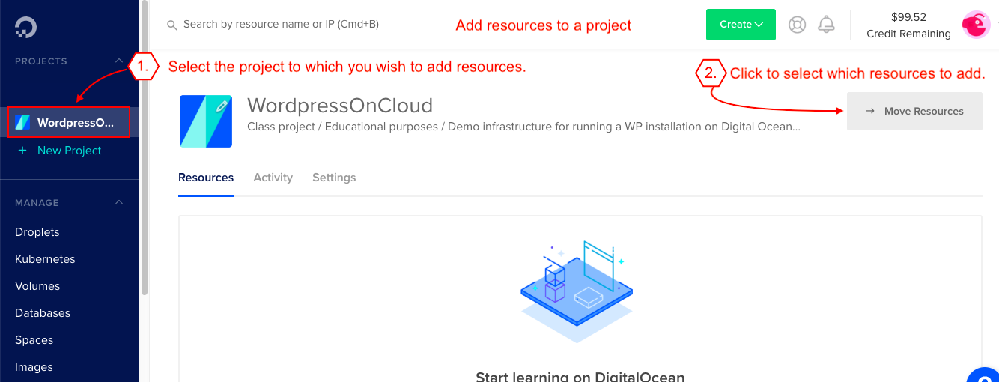
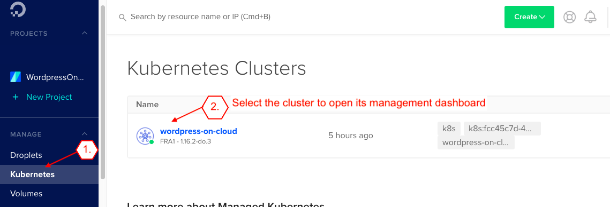
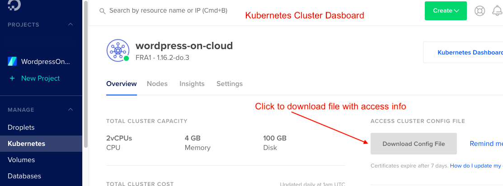
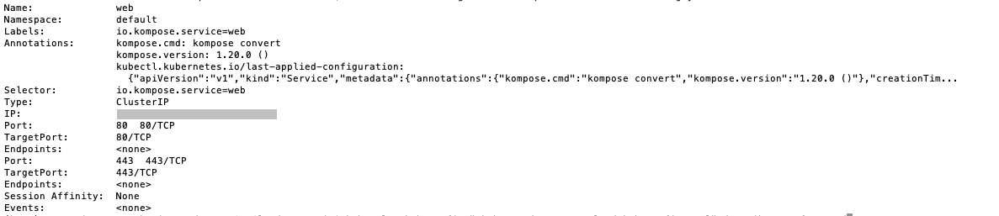
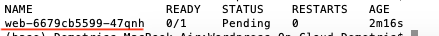
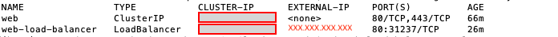

Welcome! This file will help you go through the appropriate steps in order to setup the infrastructure, deploy the WP files and expose your app to public. Make sure you have installed all the tools mentioned in the Readme file.
Sections should be followed in the given order.
First you need to create a Digital Ocean account. By the time this file was written, Digital Ocean was giving for free $100.00 credits for a 60days period.
Once your account is created and validated, log in, and follow the steps below to setup the required infrastructure.
Step 1:

Step 2:
Follow to the steps below to create a managed Kubernetes cluster on Digital Ocean.
Step 1: Create the Kubernetes cluster.
Step 2: Add the cluster resources to a project.
Follow to the steps below to create a MySQL managed cluster on Digital Ocean.
Step 1: Create the database cluster. You could add provisional access only to your Kubernetes cluster created earlier to increase the security of your installation and restrict external access to your DB. In case SSL access is activated read the details below for extra steps that might need to take place.
Step 2: Access details.
While creating the cluster, you will be provided with information about accessing your DB cluster (username, password, etc.). Copy this info as it will be used later for WP installation.
Handle SSL Access: First you need to download the CA Certificate from the Digital Ocean managed DB dashboard.
Follow to the steps below to connect your localhost to the Digital Ocean Kubernetes cluster via CLI.
Step 1: View all the deployed Kubernetes clusters and click the one you wish to manage (open the dashboard).
Step 2: Download the config file (*.yaml). It contains the access info.
Step 3: Move the downloaded file to your working directory.
Step 4: Execute the command: kubectl config get-contexts --kubeconfig="fullpath-to-downloaded-config-file.yaml"
Example of output (* marks the default cluster).
IMPORTANT: We assume that Docker is localy installed. Some basic Docker knowledge is required. Check this video for a quick intro about Docker.
A Docker Hub account is also need to host the image we are going to build here. Visit https://hub.docker.com/ to create your Docker Hub account.
A repository named wp-on-cloud (all lowercase) is also assumed that is already created in your Docker Hub. Login at https://hub.docker.com/ to create it from your dashboard.
Dockerfile contains all the required information to build the Docker image. Below you describe the structure of the Dockerfile we need in order to build the required Docker image to host our WP installation, i.e. our Apache webserver and PHP. We used the Docker official deployment of [https://hub.docker.com/_/php/](PHP).
IMPORTANT: Make sure the name of the file is exactly like this: Dockerfile - Pay attention to capital D.
Step 1: Create the Dockerfile (already created - see the comments inside the file for details) and the docker-compose.yml (file already created).
Step 2: Build the Docker image: docker build -t {USERNAME}/wp-on-cloud .
where {USERNAME} is your Docker Hub username.
Step 3 (optional): Run the image: docker run -p 80:80 {USERNAME}/wp-on-cloud. Then navigate to localhost on your favorite browser. If all is setup correctly then, the default WP installation page will popup.
Step 4: Connect to your Docker Hub account: docker login
Step 5: Push to your Docker Hub account: docker push {USERNAME}/wp-on-cloud
where {USERNAME} is your Docker Hub username.
Step 1: Have your username, email and password for your Docker Hub account.
Step 2: Create a namespace for the installation (name it wp-on-cloud): kubectl create namespace wp-on-cloud --kubeconfig="..full path to kubernetes config file..". Check previous section about the yaml file
Step 3: Run: kubectl --kubeconfig="fullpath-to-downloaded-config-file.yaml" create secret docker-registry docker-hub-cred --docker-server="https://index.docker.io/v1/" --docker-username="{USERNAME}" --docker-password="{PASSWORD}" --docker-email="{USEREMAIL}" -n wp-on-cloud
where:
IMPORTANT: DO NOT CHANGE THE SECRET REGISTRY NAME AS IS USED IN THE YAML FILES FOR CONFIGURING THE KUBERNETES CLUSTER.
To delete the Secret run: kubectl --kubeconfig="fullpath-to-downloaded-config-file.yaml" -n wp-on-cloud delete secret docker-hub-cred
The kubernetes.yaml file holds all the Kubernetes cluster configuration & deployment (load balancer, storage, etc.)
Step 1: Deploy to Kubernetes cluster: kubectl apply -n wp-on-cloud -f kubernetes.yaml --kubeconfig="..full path to kubernetes config file..".
Step 2: Validate: kubectl describe svc wordpress -n wp-on-cloud --kubeconfig="..full path to kubernetes config file..". If the app was correctly deployed the output will be similar to the following:

IMPORTANT: I had an issue running the apply command twice in order to redeploy. I had to delete the created resources first. To do so I run: kubectl delete -n wp-on-cloud -f kubernetes.yaml --kubeconfig="..full path to kubernetes config file.."
which is similar to command of Step 2, except that apply is replaced with delete.
Step 3: Verify pods are deployed kubectl get pod -n wp-on-cloud --kubeconfig="..full path to kubernetes config file..". If the app was correctly deployed the output will be similar to the following:

Once the infrastructure is set (Kubernetes & DB clusters) we are ready to install WP and parametrize the installation.
Make sure you run the installation on the online domain in order to keep the online data in the DB.
Once WP is uploaded and the domain is visited for the first time, the installation of WP will start. Accessing information for the MySQL cluster (see previous section) will be used here.
Step 1: Visit your domain. To get your public cluster IP run: kubectl get services -n wp-on-cloud --kubeconfig="..full path to kubernetes config file.."
Once executed, you will see an output like this:

The IP address xxx.xxx.xxx.xxx under the EXTERNAL-IP column is the IP of your deployed cluster to access the WP installation.
Step 2: Follow the WP installation instructions.